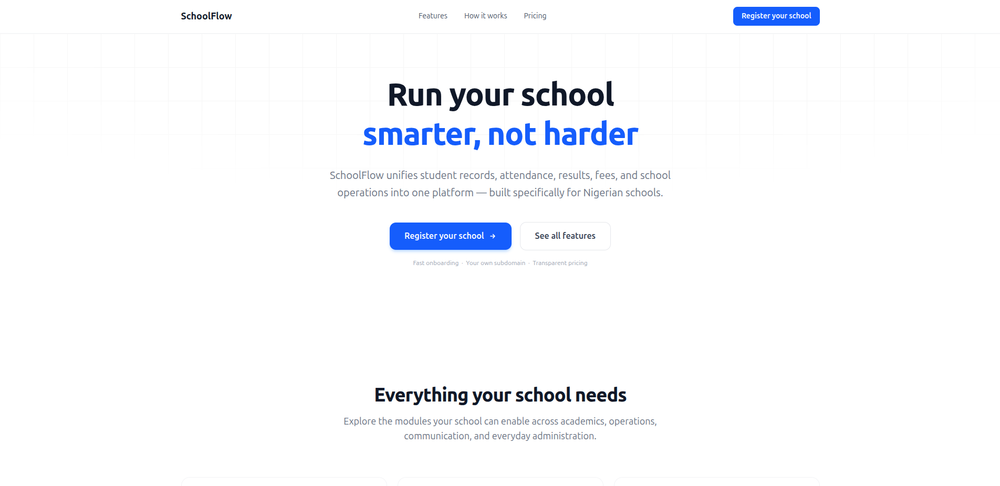

Case Study · 2025
SchoolFlow
A school management platform that replaces spreadsheets, fragmented tools, and paper records with a single system built for how Nigerian schools actually operate.

01 · Problem
The Context
Nigerian schools spend too much time on paperwork. Attendance, result computation, fee tracking, report cards. Most schools still do these by hand. The ones that use software usually stitch together three or four different tools that don't talk to each other. A teacher marks attendance in one spreadsheet, enters results in another app, and the bursar has a separate system for fees. Nobody has the full picture.
The existing school management platforms in Nigeria tend to be expensive, clunky, or built for a different era. Parent communication is usually a termly printed report card. If a parent wants to know whether their child attended school today, or how much they still owe in fees, the answer involves phone calls and manual lookups.
The constraint that shaped everything
Schools also struggle with onboarding. When a school switches from paper records to a digital system, they bring years of historical data. Fee debts recorded in old ledgers. Student results from previous terms. The platform needs to absorb this without forcing the school to re-enter everything or distort the current fee structures to match old amounts.
02 · Requirements
What It Needed to Do
Core modules
- Student records and class management
- Attendance tracking with absenteeism alerts
- Result computation with support for Nigerian grading scales
- Report card generation with admin approval workflow
- Fee tracking with multiple payment methods (Paystack, Flutterwave, bank transfer, cash)
- Hostel allocation and transport routing
- Parent portal with real-time access to academic data and fee status
Business requirements
- Schools pay based on what they use: base tier by student count, optional paid modules
- Prorated mid-cycle upgrades, renewals that don't discard unused days, downgrades at cycle end
- Calendar progression with strict readiness checks before advancing terms or academic years
- Legacy debt onboarding: import historical fee debts without touching active fee structures
Non-functional requirements
- Database-level tenant isolation (one database per school)
- Real-time announcements and parent communication via Socket.io
- Subscription enforcement at the middleware level with cached entitlement checks
- Background jobs for analytics, fee reminders, and subscription lifecycle management
03 · Architecture
How I Approached It
The core architectural challenge was multi-tenant database routing. Each school gets its own PostgreSQL database. Isolating data at the database level means a school's information never mixes with another school's, and heavy queries from one school don't slow down anyone else. I wrote about the trade-offs behind this choice in more detail, comparing shared-schema, schema-per-tenant, and database-per-tenant, and why the last one fit this project.
Sequelize models store a static reference to their Sequelize instance. Without intervention, connecting School B's database would overwrite that reference and silently redirect all of School A's queries to School B's database.
Key architectural decision
The project uses Node's
AsyncLocalStorage to bind the
correct school database to each incoming
request. Every Sequelize model's
.sequelize property is patched at
startup with a getter that reads from this async
context instead of pointing to a static
connection. A concurrent request for School B
gets its own async chain pointing to School B's
database.
Stack decisions
- Angular for the frontend: chosen for its strong typing with TypeScript, built-in DI, and the structure it imposes on a large, module-heavy application.
- Node.js + Express + TypeScript on the backend: efficient and flexible framework for building RESTful web services, with typescript to enhance code quality, maintainability.
- PostgreSQL with per-tenant databases: reliable RDBMS providing ACID-compliant transactions, strong data integrity, and efficient support for complex relational queries.
- Redis : in-memory cache store for frequently accessed data, token invalidation to improve application performance.
- Socket.io : Socket.IO was chosen to provide real-time communication for features such as announcements, chat, presence tracking through persistent, bidirectional client-server connections.
04 · Implementation
Building It
The multi-tenant database routing was the first real
technical hurdle. The
AsyncLocalStorage getter pattern solved
it cleanly, but it came with constraints. Background
jobs, timeouts, event emitters, and anything that
breaks out of the async chain lose the context and
need an explicit runWithDb wrap.
The subscription system
The subscription system grew more complex than initially planned. What started as a simple fixed-plan model became modular pricing with usage tiers, per-module pricing, dependency validation, prorated mid-cycle upgrades, and cached entitlement checks. The business rules are deliberate. A school on a cheaper plan can upgrade immediately and pays the prorated difference for the remaining time. Renewals don't discard unused days. Downgrades and lateral plan switches are blocked until the current cycle ends. These rules are correct for the user, but they add surface area for edge cases. Payment verification distinguishes initial purchases from renewals from upgrades. Webhook handlers process the same distinctions. The subscription lifecycle job handles reminders and expirations without double-sending or missing a school.
Calendar progression
Calendar progression took iteration to get right. The requirement is straightforward on paper: move a school from one term to the next, or roll over an academic year. The reality is a chain of dependencies. Results must be finalized. Report cards must exist and be admin-approved. Fee structures must be configured for the destination term. For year-end rollovers, promotion decisions must be resolved for every student. The implementation runs these checks in a preview endpoint, then re-runs them inside a database transaction on confirm to prevent acting on a stale preview. The promotion placement logic (matching class arm names, checking capacity, handling graduation for final-year students) surfaced edge cases that weren't obvious during the initial design.
Legacy fee debt
The legacy fee debt feature exposed a tension between the clean ledger model and the messy reality of school onboarding. The original fee ledger assumed every debt came from a system-defined fee structure. Real schools may bring paper records with amounts that didn't match any current fee configuration. Extending the assignment model to support multiple debt sources (legacy detailed, opening balance, manual adjustment) while keeping the payment allocation logic unified across all source types required careful refactoring of the assignment status rules and reporting queries.
Fee payment allocation
Manual payments, gateway payments, teller-verified payments, and webhook-processed payments all flow through different code paths, but they all need to use the same FIFO oldest-debt-first strategy. Centralizing that allocation logic in the payment service and making sure every payment entry point routes through it was important. Without that centralization, a gateway webhook might allocate differently from a manual payment, which would be hard to catch and harder to explain to a bursar.
Socket.io in multi-tenant
Socket connections join rooms based on the user's role and the school they belong to. But subscription state can change mid-connection (a school's subscription expires, or modules get removed), and the socket's room membership needs to reflect that. The connection-level subscription gate runs once at handshake, but longer-lived connections may outlive the cached access decision. This is handled by the short TTL on the subscription context cache, with a more robust solution (mid-connection re-authorization or forced disconnect on subscription expiry) on the roadmap.